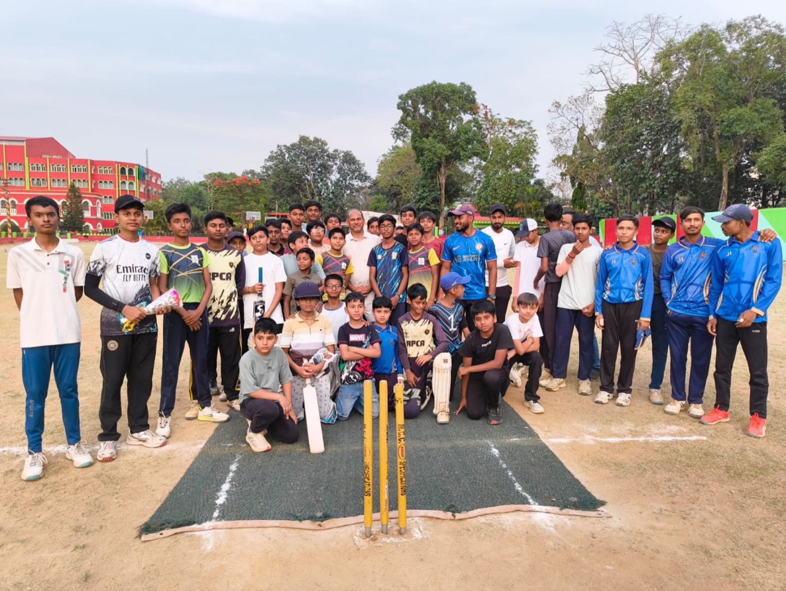

Straight Answers.
Everything parents and players ask before joining a cricket academy in Ranchi — joining, ages, timings, fees and the pathway.
Getting in the nets.
The short version: message us, come to DIG Ground, and let one honest session do the talking.
- 01
How do I join a cricket academy in Ranchi like RPCA?
Book a trial. DM @rpca_cricket_academy_ranchi, call or WhatsApp +91 70049 41788, or use the contact form — we'll confirm a time at DIG Ground, Bariatu. Bring your kit; one session in the nets tells you everything.
- 02
What age can my child start?
We coach ages 7 to 19+. Foundation (7–12) starts with grip, stance and balance on a safe soft-ball to hard-ball progression, then Development (13–16) and the Elite Pathway (17+).
- 03
Do I need my own kit for the trial?
Bring whatever kit you have — the session matters more than the gear. If you're starting from zero, message us first and we'll tell you what you actually need.
- 04
Does RPCA offer one-on-one coaching?
Yes. Alongside small group batches there are one-on-one sessions — a coach, a net and a plan built around your specific game. See Programs.
The practical bits.
Where we train, when the batches run, and how fees work — without the runaround.
- 05
Where is RPCA located in Ranchi?
DIG Ground, Bariatu — Ranchi, Jharkhand. Two turf & matting practice nets. The exact meeting point is shared when we confirm your trial.
- 06
What are the training timings?
Morning and evening batches, so school and work don't have to mean missing training. Exact batch timings are confirmed when you visit or book a trial.
- 07
What are the fees?
Fees depend on the player's age group and format — group batches and one-on-one are priced differently. For current fees, DM @rpca_cricket_academy_ranchi or call/WhatsApp +91 70049 41788.
- 08
Can RPCA take a player toward JSCA and state cricket?
That's the whole point of the pathway — district, JSCA age-group and league cricket, stage by stage, assessed by your coach. Coach Yuvraj Kumar is a JSCA-registered Jharkhand all-rounder who has played in the Jharkhand T20 for Ranchi Titans.
Ask us at the nets.
The fastest answers come from a DM — or just book a trial and see the academy for yourself.